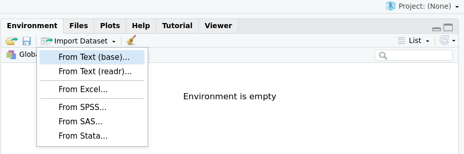

# Con encabezados, separado por tabulaciones y el decimal es el punto
prueba <- read.table("prueba.csv", header = T, sep = "\t", dec = ".")
# Con encabezados, separado por tabulaciones y coma como decimal
prueba <- read.table("prueba.csv", header = T, sep = "\t", dec = ",")
# Con encabezados, separado comas y punto como decimal
prueba <- read.table("prueba.csv", header = T, sep = ",", dec = ".")
# Con encabezados, separado punto y coma, y con coma como punto decimal
prueba <- read.table("prueba.csv", header = T, sep = ";", dec = ",")5 Importar/exportar datos en R
Un aspecto importante para cualquier análisis de datos es acceder a los datos!
Los datos pueden estar almacenados en diversos formatos: archivos de texto (*.txt, *.dat, etc), texto separado por comas (*.csv), planillas de cálculos (*.xls o *.xlsx), etc.
En este curso vamos a trabajar con archivos que ya se encuentran en planillas de cálculo tipo Excel o archivos de texto plano.
5.1 Importar datos
5.1.1 Funciones nativas
R viene la función read.table() y derivados, que permiten leer datos desde formatos tipo texto plano (plain text format). El más popular entre estos es *.csv. Este formato asume que los datos están en formato de tabla o rectangular (e.g. variables en columnas y observaciones en filas) y devuelve un data.frame. En ?read.table se detallan todos los argumentos, los más importantes son:
filepara indicar el nombre o ruta al archivoheaderpara indicar si las columnas tienene encabezados que deben ser usados como nombre de las variables.seppara indicar el separador de columnasdecpara indicar el simbolo decimal
Dependiendo de las combinaciones de estos 3 argumentos hay variantes (read.csv(), read.csv2(), read.delim(), read.delim2()) que son atajos de `read.table()`` (ver ayuda).
Mediante algun editor de textos (puede ser dentro de RStudio) conviene abrir el archivo y examinarlo para determinar:
Tiene encabezados?
Cómo están separadas las columnas?
Cuál es el símbolo del decimal?
Supongamos que tenemos el archivo de texto prueba.csv, las alternativas podrían ser:
En el caso que el archivo prueba.csv esté en otro directorio o ubicación que no sea el proyecto o getwd() hay que indicar la ruta completa al archivo.
Una vez importados los datos es conveniente verificar como han sido leidos en el R. Una alternativa es imprimirlo escribiendo el nombre del objeto directamente en la consola.
pruebaOtra alternativa es utilizar la función View() que muestra la tabla de datos en un formato de planilla interactiva de solo lectura.
View(prueba)Si bien podemos inferir que tipo de datos se leyeron, una alternativa mejor es mirar la estructura con la función str().
str(prueba)5.1.2 Paquetes para importar/exportar datos
Existen paquetes específicos que permiten leer virtualmente cualquier formato de archivos.
5.1.2.1 readr
Si bien la función read.table() y derivadas permiten leer datos rectangulares en formato texto, el paquete readr link provee una implementación más moderna (y rápidas) de estas funciones. Las funciones se llaman igual que las nativas pero se reemplaza . por _ en el nombre. Ejemplo: read_table()
Este paquete ya está integrado a tidyverse. Para leer el set de datos que creamos en la actividad anterior:
pacman::p_load(tidyverse)
prueba_trigo <- read_csv("datasets/prueba_trigo.csv")Rows: 5 Columns: 3
── Column specification ────────────────────────────────────────────────────────
Delimiter: ","
chr (1): Variedad
dbl (2): Lote, Rendimiento
ℹ Use `spec()` to retrieve the full column specification for this data.
ℹ Specify the column types or set `show_col_types = FALSE` to quiet this message.prueba_trigo# A tibble: 5 × 3
Lote Variedad Rendimiento
<dbl> <chr> <dbl>
1 1 Escorpion 34
2 2 Escorpion 36
3 3 Yarara 40
4 4 Baguette11 28
5 5 Tijetera 31A diferencia de la función nativa, las funciones de readr devuelven un objeto llamado tibble que es una especie de data.frame pero con algunas propiedades extra.
5.1.2.2 rio
A diferencia de readr que es una reimplementación de funciones de R, hay un paquete llamado rio link que es una especie de metapaquete y permite simplificar la importación, exportación, y conversión de formatos en una sintaxis unificada.
Este paquete trabaja con una mayor variedad de formatos y, basado en la extensión del archivo, busca la función y/o paquete apropiado para leer o guardar los datos. En el caso de ser necesario, se pueden pasar argumentos a las funciones.
Retomando el ejemplo de trigo, podemos leer los datos con la función import()
pacman::p_load(rio)
prueba_trigo <- import("datasets/prueba_trigo.csv")
prueba_trigo Lote Variedad Rendimiento
1 1 Escorpion 34
2 2 Escorpion 36
3 3 Yarara 40
4 4 Baguette11 28
5 5 Tijetera 31A diferencia de readr siempre devuelve un data.frame. Si queremos que devuelva un tibble podemos usar el argumento setclass
prueba_trigo <- import("datasets/prueba_trigo.csv", setclass = "tibble")
prueba_trigo# A tibble: 5 × 3
Lote Variedad Rendimiento
<int> <chr> <int>
1 1 Escorpion 34
2 2 Escorpion 36
3 3 Yarara 40
4 4 Baguette11 28
5 5 Tijetera 315.1.3 Formas de importar datos
A continuación vamos a detallar dos formas de abrir el archivo urbana_weather.xlsx que contiene datos meteorológicos de la ciudad de Urbana (Illinois).
5.1.3.1 Desde la consola (recomendado)
Una vez que descargamos el archivo datos en la carpeta datasets dentro de nuestro directorio de trabajo o proyecto podemos leerlo en R usando la función import() del paquete rio. Esta función se encargará de llamar la función necesaria para leer el archivo que le suministremos.
urbana <- import("datasets/urbana_weather.xlsx", setclass = "tibble")
urbana# A tibble: 240 × 4
YEAR month precip temp
<dbl> <chr> <dbl> <dbl>
1 2000 Jan 1.54 25.6
2 2001 Jan 1.32 25.4
3 2002 Jan 2.81 34
4 2003 Jan 0.79 21.1
5 2004 Jan 2.18 24
6 2005 Jan 6.2 27.8
7 2006 Jan 1.78 37.8
8 2007 Jan 3.03 29.7
9 2008 Jan 2.31 26.2
10 2009 Jan 0.68 18.8
# ℹ 230 more rowsSi sólo estuvieramos ineresados en el rango A1:C5 (primeros 4 registros de las 3 primeras columnas), podríamos usar:
urbana2 <- import(file = "datasets/urbana_weather.xlsx", range = "A1:C5")
urbana2 YEAR month precip
1 2000 Jan 1.54
2 2001 Jan 1.32
3 2002 Jan 2.81
4 2003 Jan 0.795.1.3.2 Desde el importador de datos de RStudio
RStudio cuenta con un asistente de importación de datos (File > Import Dataset) que brinda interfase a varias funciones especializadas en la importación de datos de paquetes específicos como readr, readxl, etc.
En el menú File > Import Dataset o bien el ícono del panel Environment despliega una lista con disitintas opciones de importación: nos interesa From Excel (readxl)...


Este menú tiene cuatro paneles:
Una barra de direccion para indicar la ruta al archivo o URL.
Una vista previa del contenido del archivo
Opciones de importación: aquí se puede especificar el nombre del objeto que se creará dentro de R (
Name), la cantidad de lineas a leer, el número de la hoja, el rango de celdas, líneas a saltear (skip) y el identificador de datosNA.Vista previa del código. En esta parte se puede visualizar como se construye el comando que se ejecturará al clickear en
Import.
Aclaración
Si bien esta alternativa es intuitiva y amigable, no es reproducible a menos que el código generado por este asistente sea incluido en el script para futuras sesiones.
5.1.3.3 Desde el portapapeles
Una alternativa conveniente para acceder rápidamente a los datos es usando el portapapeles. Suponiendo que los datos estan en una hoja de cálculos:
Seleccionar el rango de celdas
A1:C5que nos interesa incluyendo los encabezadosCopiar en el porta papeles (CTRL + C)
Luego en R
urbana3 <- read.table("clipboard")
Aclaración
Si bien esta alternativa es rápida, al no ser reproducible (no hay forma de plasmarla en el script para futuras sesiones), no es recomendable salvo para una exploración rápida.
5.2 Exportar datos
Así como R viene con la función read.table() y derivados, que permiten leer datos desde formatos tipo texto plano (plain text format). Existen funciones que hacen lo contrario: exportar data.frames a archivos de texto plano. Estas funciones se comienzan con el nombre write* (write.table(), write.csv(), …).
Al igual que read.table() tiene argumentos claves para espeficiar:
filepara indicar el nombre o ruta al archivoheaderpara indicar si las columnas tienene encabezados que deben ser usados como nombre de las variables.seppara indicar el separador de columnasdecpara indicar el simbolo decimal
Además se le agrega el argumento x para especificar que objeto (data.frame) queremos exportar.
Supongamos que tenemos el set de datos prueba en R y queremos exportarlo a CSV con titulos separados por ; y punto decimal.
write.table(prueba, file = "prueba.csv", header = T, sep = ";", dec = ",")En el archivo prueba.csv se escribira en el directorio de trabajo (getwd())
5.2.1 readr
De la misma manera que las funciones nativas, el paquete readr provee funciones contrarias a read_table() y derivadas.
pacman::p_load(tidyverse)
write_csv(x = prueba, file = "prueba.csv")Error in eval(expr, envir, enclos): objeto 'prueba' no encontradoA diferencia de la función nativa, tienen algunas opciones extra.
5.2.2 rio
Este metapaquete y permite simplificar la exportación de formatos en una sintaxis unificada con la función export().
Retomando el ejemplo de trigo, podemos exportar los datos con la función export(). Suponiendo que el data.frame se llama trigo.
pacman::p_load(rio)
export(x = trigo, file = "prueba_trigo.csv")Error in eval(expr, envir, enclos): objeto 'trigo' no encontradoEl formato de salida podemos indicarlo con la extensión apropiada.